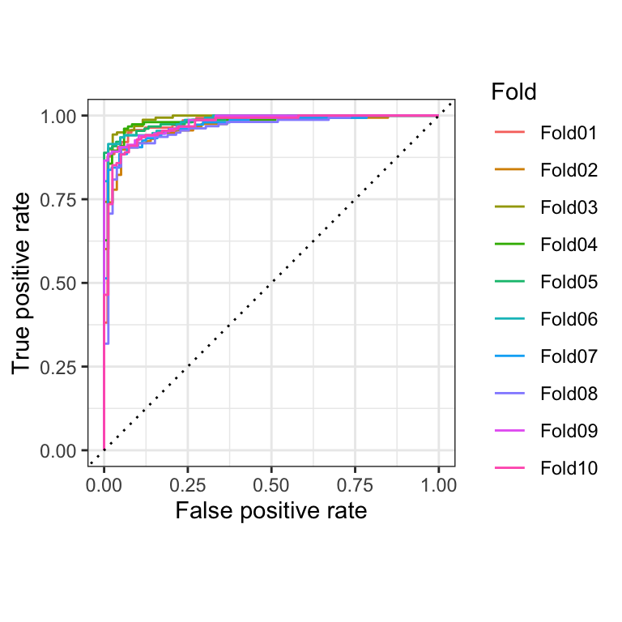
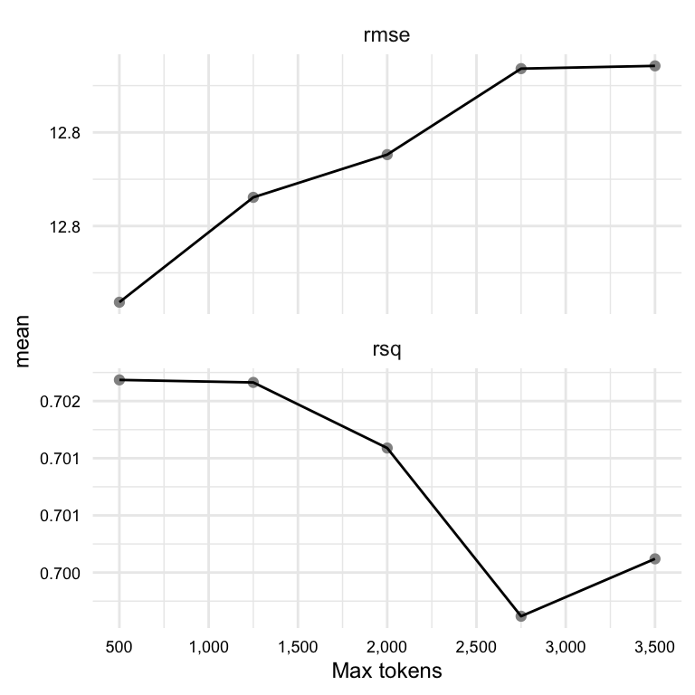
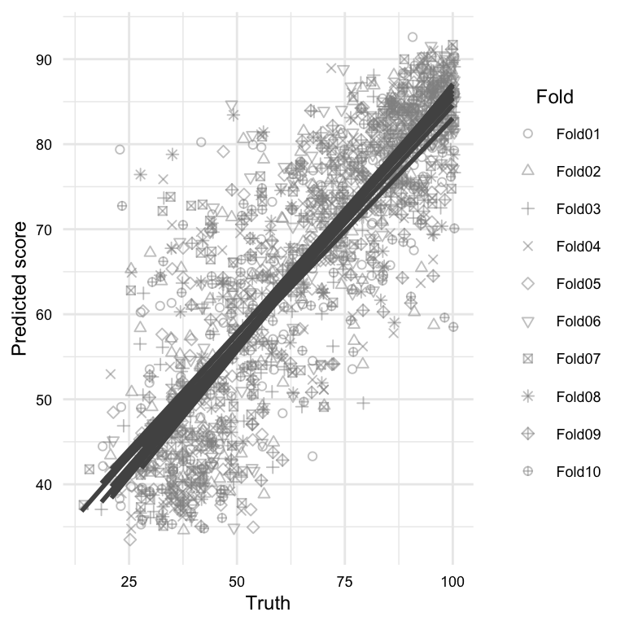
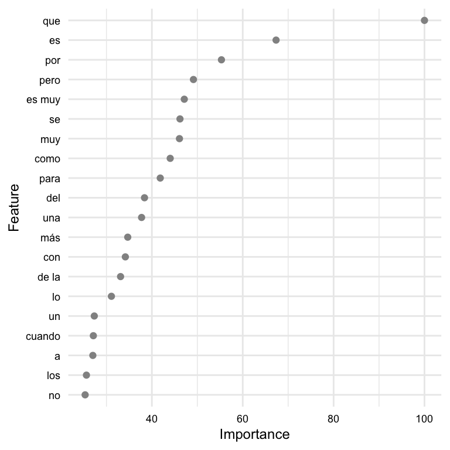

| variable | name | variable_type | description |
|---|---|---|---|
| doc_id | Document ID | numeric | Unique identifier for each document |
| subcorpus | Subcorpus | categorical | The subcorpus to which the document belongs (‘Learner’ or ‘Native’) |
| placement_score | Placement Score | numeric | The score obtained by the document author in a placement test. Null values indicate missing data (i.e. the document author did not take the placement test) |
| proficiency | Proficiency | ordinal | The level of language proficiency of the document author (‘Upper intermediate’, ‘Lower advanced’, ‘Upper beginner’, or ‘Native’) |
| text | Text | character | The written text provided by the document author |
9 Predict
All models are wrong, but some are useful.
— George E.P. Box
In this chapter, I introduce supervised learning as an approach to data analysis, specifically focusing on its applications in text analysis. Supervised learning aims to establish a relationship between a target (or outcome) variable and a set of feature variables derived from text data. By leveraging this relationship, statistical generalizations (models) can be created to accurately predict values of the target variable based on the values of the feature variables. Throughout the chapter, we explore practical tasks and theoretical applications of statistical learning in text analysis.
9.1 Orientation
In this section, I introduce the concept of supervised learning and provide an overview of the workflow for building and evaluating predictive models for text analysis. We will discuss the research goals that are typically addressed using supervised learning and then estabnlish a workflow for building predictive models, including the steps for preparing data, training and testing models, and evaluating and reporting results.
9.1.1 Goals and approach
Predictive data analysis (PDA) is a powerful analysis method for linguists and other researchers interested in making predictions about new or future data based on patterns in existing data. As discussed in Section 3.2.2 and Section 4.4.1, PDA is a type of supervised learning, which means that it involves training a model on a labeled dataset where the input data and desired output are both provided. The model is able to make predictions or classifications based on the input data by learning the relationships between the input and output data. Supervised machine learning is an important tool for linguists studying language and communication, as it allows us to analyze language data to identify patterns or trends in language use, assess hypotheses, and prescribe actions.
The approach to conducting predictive analysis shares some commonalities with exploratory data analysis (Section 8.1.1) (as well as inferential analysis Chapter 10), but there are also some key differences. Consider the workflow in Table 9.1.
| Step | Name | Description |
|---|---|---|
| 1 | Identify | Consider the research question and aim and identify relevant variables |
| 2 | Split the data into representative training and testing sets | |
| 3 | Apply variable selection and engineering procedures | |
| 4 | Inspect | Inspect the data to ensure that it is in the correct format and that the training and testing sets are representative of the data |
| 5 | Interrogate | Train and evaluate the model on the training set, adjusting models or hyperparameters as needed, to produce a final model |
| 6 | (Optional) Iterate | Repeat steps 3-5 to selecting new variables, models, hyperparameters |
| 7 | Interpret | Interpret the results of the final model in light of the research question or hypothesis |
Focusing on the overlap with other analysis methods, we can see some fundamentals steps such as identifying relevant variables, inspecting the data, interrogating the data, and interpreting the results. And if our research aim is exploratory in nature, iteration may also be a part of the workflow. These steps highlight the importance conducting methodologic and communicable research, as discussed in Section 4.1.
There are two main differences, however, between the PDA and the EDA workflow we discussed in Chapter 8. The first, reflected the majority of the steps in the workflow, is that PDA requires partitioning the data into training and testing sets. As discussed in Section 3.2.2, the training set is used to develop the model, and the testing set is used to evaluate the model’s performance. This strategy is used to ensure that the model is robust and generalizes well to new data. It is well known, and makes intuitive sense, that using the same data to develop and evaluate a model likely will not produce a model that generalizes well to new data. This is because the model will have potentially conflated the nuances of the data (‘the noise’) with any real trends (‘the signal’) and therefore will not be able to generalize well to new data. This is called overfitting and by holding out a portion of the data for testing, we can evaluate the model’s performance on data that it has not seen before and therefore get a more accurate estimate of the generalizable trends in the data.
Another procedure to avoid the perils of overfitting, is to use resampling methods as part of the model evaluation on the training set. Resampling is the process of repeatedly drawing samples from the training set and evaluating the model on each sample. The two most common resampling methods are bootstrapping (resampling with replacement) and cross-validation (resampling without replacement). The performance of these multiple models are summarized and the error between them is assessed. The goal is to minimize the performance differences between the models while maximizing the overall performance. These measures go a long way to avoiding overfitting and therefore maximizing the chance that the training phase will produce a model which is robust at the testing phase.
The second difference, not reflected in the workflow but inherent in predictive analysis, is that PDA requires a fixed outcome variable. This means that the outcome variable must be defined from the outset and cannot be changed during the analysis. Furthermore, the informational nature of the outcome variable will dictate the what type of algorithm we choose to interrogate the data and how we will evaluate the model’s performance.
If the outcome is categorical in nature, we will use a classification algorithm (e.g. logistic regression, naive bayes, etc.). Classification evaluation metrics include accuracy, precision, recall, and F1 score which can be derived from and visualized in a cross-tabulation of the predicted and actual outcome values.
If the outcome is numeric in nature, we will use a regression algorithm (e.g. linear regression, support vector regression, etc.). Since the difference between prediction and actual values is numeric, metrics that quantify numerical differences, such as root mean square error (RMSE) or \(R^2\), are used to evaluate the model’s performance.
The evaluation of the model is quantitative on the one hand, but it is also qualitative in that we need to consider the implications of the model’s performance in light of the research question or hypothesis. Furthermore, depending on our research question we may be interested in exploring the features that are most important to the model’s performance. This is called feature importance and can be derived from the model’s coefficients or weights. Notably, however, some of the most powerful models in use today, such as deep neural networks, are not easily interpretable and therefore feature importance is not easily derived. This is something to keep in mind when considering the research question and the type of model that will be used to address it.
9.2 Analysis
In this section we now turn to the practical application of predictive data analysis. The dicussion will be separated into classification and regression tasks, as model selection and evaluation procedures differ between the two. For each task, we will frame a research goal and work through the process of building a predictive model to address that goal. Along the way we will cover concepts and methods that are common to both classification and regression tasks and specific to each.
To frame our analyses, we will posit research aimed at identifying language usage patterns in second language use, one for a classification task and one for a regression task. Our first research question will be to identify potential salient differences in Spanish language use between natives and L1 English learners (categorical). Our second research question will be to gauge the extent to which the the L1 English learners’ Spanish language placement test scores (numeric) can be predicted based on their language use.
We will use data from the CEDEL2 corpus1. We will include a subset of the variables from this data that are relevant to our research questions. The data dictionary for this dataset is seen in Table 9.2.
Let’s go ahead and read the transformed dataset and preview it in Example 9.1.
Example 9.1
# Read in the dataset
cedel_tbl<-
read_csv("../data/cedel2/cedel2_transformed.csv")
# Preview
cedel_tbl|> glimpse()> Rows: 2,957
> Columns: 5
> $ doc_id <dbl> 1, 2, 3, 4, 5, 6, 7, 8, 9, 10, 11, 12, 13, 14, 15, 16,…
> $ subcorpus <chr> "Learner", "Learner", "Learner", "Learner", "Learner",…
> $ placement_score <dbl> 14.0, 16.3, 16.3, 18.6, 18.6, 18.6, 20.9, 20.9, 20.9, …
> $ proficiency <chr> "Lower beginner", "Lower beginner", "Lower beginner", …
> $ text <chr> "Yo vivo es Alanta, Georgia. Atlanta es muy grande ciu…The output of Example 9.1 provides some structural information about the dataset, number of rows and columns as well as variable types.
After performing some diagnostics, the dataset is in good order to proceed with the analysis. I updated the variables subcorpus and proficiency as factor variables and ordered them in a way that makes sense for the analysis. The placement_score variable is distributed well across the proficiency levels. The subcorpus variable is less balanced, with around 65% of the texts being from learners. This is not a problem, but it is something to keep in mind when interpreting the results of the analysis.
We will be using the tidymodels framework in R to perform this analysis. tidymodels is a metapackage, much like tidyverse, that provides a consistent interface for modeling and machine learning. Some key packages unique to tidymodels are recipes, parsnip, workflows, and tune. recipes includes functions for preprocessing and engineering features. parsnip provides a consistent interface for specifying modeling algorithms. worflows allows us to combine recipes and models into a single pipeline. Finally, tune give us the ability to evaluate and tune hyperparameters of models.
Since we are using text data, we will also be using the textrecipes package which makes various functions available for preprocessing text including extracting and engineering features.
Let’s go ahead and do the setup, loading the necessary packages, seen in Example 9.2.
Example 9.2
# Load packages
library(tidymodels) # modeling metapackage
library(textrecipes) # text preprocessing
# Set global options
tidymodels_prefer() # prefer tidymodels functions over other functions with the same name9.2.1 Text classification
The goal of this analysis is to classify texts as either native or learner based on the writing samples. This is a binary classification problem. We will approach this problem from an exploratory perspective, and therefore our aim is to identify features from the text that best distinguish between the two classes.
Let’s modify the data frame to include only the variables we need for this analysis, assigning it to cls_tbl. In the process, we will rename the subcorpus variable to outcome to reflect that it is the outcome variable. This is seen in Example 9.3.
Example 9.3
# Rename subcorpus to outcome
cls_tbl <-
cedel_tbl |>
select(outcome = subcorpus, proficiency, text)Let’s begin the workflow from Table 9.1 by identifying the features that we will use to classify the texts. There may be many features that we could use. These could be features derived from raw text (e.g. characters, words, n-grams, etc.), feature vectors (e.g. word embeddings), or meta-linguistic features (e.g. part-of-speech tags, syntactic parses, or semantic features) that have been derived from these through manual or automatic annotation.
Let’s start simple and use words as the predictor features. This is a simple approach that is often used as a baseline for more complex models. If it doesn’t work well, we can always try something else.
This provides us the linguistic unit we will use but we still need to decide how to represent these words. Do we use raw token counts? Do we use normalized frequencies? Do we use some type of weighting scheme? These are questions that we need to consider as we embark on this analysis. Since we are exploring we can use trial-and-error or consider the implications of each approach and choose the one that best fits our research question –or both.
Let’s approach this with a bit more nuance as we already have some domain knowledge about language use. First, we know that in the distribution of linguistic units is highly skewed, meaning that a few words occur very frequently and most words occur very infrequently. Second, we know that the most frequent words in a language are often function words (e.g. ‘the’, ‘and’, ‘of’, etc.) and that these words are tend not very informative for distinguishing between classes of texts. Third, we know that comparing raw counts across texts conflates the influence text class lengths.
With these considerations in mind, we will tokenize the text into words and then use the term frequency-inverse document frequency (TF-IDF) weighting scheme to represent the words. This scheme will down weight words that are common across all documents and up weight words that are unique to a document. It also mitigates the varying lengths of the documents. This is a common approach in text classification and is a good starting point for our analysis.
With our features identified, we can move on to step 2 of our workflow and split the data into training and testing sets. We make the splits to our data at this point to draw a line in the sand between the data we will use to train the model and the data we will use to test the model. A typical approach in supervised machine learning is to allocate around 75-80% of the data to the training set and the remaining 20-25% to the testing set, depending on the number of observations. We have 2957 observations in our data set, so we can allocate 80% of the data to the training set and 20% of the data to the testing set.
In Example 9.4, we will use the initial_split() function from the rsample package to split the data into training and testing sets. The initial_split() function takes a data frame and a proportion and returns a split object which contains the training and testing sets. We will use the strata argument to stratify the data by the outcome variable. This will ensure that the training and testing sets have the same proportion of native and learner texts.
Example 9.4
# Set seed for reproducibility
# Split the data into training and testing sets
cls_split <-
initial_split(
data = cls_tbl,
prop = 0.8,
strata = outcome
)
# Create training set
cls_train <- training(cls_split) # 80% of data
# Create testing set
cls_test <- testing(cls_split) # 20% of dataA confirmation of the distribution of the data across the training and testing sets as well as a break down of the outcome variable can be seen in Example 9.5.
Example 9.5
# View the distribution of the outcome variables
cls_train |>
tabyl(outcome) |>
adorn_totals("row") |>
adorn_pct_formatting(digits = 1)> outcome n percent
> Learner 1524 64.5%
> Native 840 35.5%
> Total 2364 100.0%cls_test |>
tabyl(outcome) |>
adorn_totals("row") |>
adorn_pct_formatting(digits = 1)> outcome n percent
> Learner 382 64.4%
> Native 211 35.6%
> Total 593 100.0%We can see that the split was successful. The training and testing sets have very similiar proportion of native and learner texts.
We are now ready to create a ‘recipe’, step 3 in our analysis. A recipe is a set of instructions or blueprint which specify the outcome variable and the predictor variable and determines how to preprocess and engineer the feature variables.
We will use the recipe() function from the recipes package to create the recipe. The recipe() function minimally takes a formula and a data frame and returns a recipe object. The formula specifies the outcome variable (\(y\)) and the predictor variable(s) (\(x_1 .. x_n\)). For example y ~ x can be read as “y as a function of x”. In our particular case, we will use the formula outcome ~ text to specify that the outcome variable is the outcome variable and the predictor variable is the text variable. The code is seen in Example 9.6.
Example 9.6
# Create a recipe
base_rec <-
recipe(
formula = outcome ~ text,
data = cls_train
)
# Preview
base_recThe recipe object at this moment contains just one instruction, what the variables are and what their relationship is.
The recipes package provides a wide range of step_*() functions which can be applied to the recipe to specify how to engineer the variables in our recipe call. These include functions to scale (e.g step_center(), step_scale(), etc.) and transform (e.g. step_log(), step_pca(), etc.) numeric variables, and functions to encode (e.g. step_dummy(), step_labelencode(), etc.) categorical variables.
These step functions are great when we have selected the variables we want to use in our model and we want to engineer them in a particular way. In our case, however, we need to derive features from the text in the text column of datasets before we engineer them. To ease this process, the textrecipes package provides a number of step functions for preprocessing text data. These include functions to tokenize (e.g. step_tokenize()), remove stop words (e.g. step_stopwords()), and to derive meta-features (e.g. step_lemma(), step_stem(), etc.) 2. Furthermore, there are functions to engineer features in ways that are particularly relevant to text data, such as feature frequencies and weights (e.g. step_tf(), step_tfidf(), etc.) and token filtering (e.g. step_tokenfilter()).
So let’s build on our basic recipe cls_rec by adding steps relevant to our task. To extract our features, we will use the step_tokenize() function to tokenize the text into words. The default behavior of the step_tokenize() function is to tokenize the text into words, but other token units can be derived and various options can be added to the function call (as the tokenizers package is used under the hood). Adding the step_tokenize() function to our recipe is seen in Example 9.7.
Example 9.7
# Add step to tokenize the text
cls_rec <-
base_rec |>
step_tokenize(text)
# Preview
cls_recThe recipe object now contains two instructions, one for the outcome variable and one for the feature variable. The feature variable instruction specifies that the text should be tokenized into words.
We now need to consider how to engineer the word features. If we add step_tf() we will get a matrix of token counts by default. We also have the option to add step_tfidf() to get a matrix of term frequencies weighted by inverse document frequency, which effectively down weights words that are common across all documents.
We decided in step 1 that we will start with raw token counts, so we will add step_tf() to our recipe. This is seen in Example 9.8.
Example 9.8
# Add step to tokenize the text
cls_rec <-
cls_rec |>
step_tf(text)
# Preview
cls_recTo make sure things are in order and that the recipe performs as expected, we can use the functions prep() and bake() to inspect the recipe. The prep() function takes a recipe object and a data frame and returns a prep object. The prep object contains the recipe and the data frame with the feature variables engineered according to the recipe. The bake() function takes a prep object and an optional new dataset to apply the recipe to. If we only want to see the application to the training set, we can use the new_data = NULL argument.
In Example 9.9, we use the prep() and bake() functions to create a data frame with the feature variables. We can then inspect the data frame to see if the recipe performed as expected.
Example 9.9
# Prep and bake
cls_bake <-
cls_rec |>
prep() |> # create a prep object
bake(new_data = NULL) # apply to training set
# Preview
cls_bake |> dim()> [1] 2364 38115cls_bake[
c(1000:1001, 2000:2001), # selected rows
c(1, 1000:1001, 20000:20001) # selected columns
]> # A tibble: 4 × 5
> outcome tf_text_actuales tf_text_actualiadad tf_text_iniciáticas
> <fct> <int> <int> <int>
> 1 Learner 0 0 0
> 2 Learner 0 0 0
> 3 Native 0 0 0
> 4 Native 0 0 0
> # ℹ 1 more variable: tf_text_iniciativa <int>The resulting engineered features data frame has 2364 observations and 38115 variables. The first variable is the outcome variable and the remaining variables are the engineered features. We can see that the recipe performed as expected and that the feature variables are the token counts for each word in the text.
But we should pause. We have a lot of features! One for every single word in the entire corpus. This is an unweildy number of features for a model and it is likely that many of these features are not useful for our classification task. Furthermore, the more features we have, the more chance these features capture the nuances of these particular writing samples, thus, we are the more likely we are to overfit the model. All in all, we need to reduce the number of features.
Our domain knowledge about language can be of help us decide on how to approach reducing the feature set. On the one hand, we know that most tokens occur rarely in any sizable corpus. And the lower the frequency, the more likely that the token may reflect nuances of the speaker or the content of particular texts rather than generalizable trends. On the other hand, we know that a relatively small number of the most frequent words quickly account for a large proportion of the tokens in a corpus.
So just with these two considerations, we can see that we can filter out many infrequent words and likely have quite a few viable features. Let’s start with an arbitrary threshold of the top 1,000 words by frequency. We can use the step_tokenfilter() function to filter out the top 1,000 words by frequency. This particular step needs to be applied before the step_tf() step, so we will add it to our recipe before the step_tf() step. This is seen in Example 9.10.
Example 9.10
# Rebuild recipe with tokenfilter step
cls_rec <-
base_rec |>
step_tokenize(text) |>
step_tokenfilter(text, max_tokens = 1000) |>
step_tf(text)
# Prep and bake
cls_bake <-
cls_rec |>
prep() |>
bake(new_data = NULL)
# Preview
cls_bake |> dim()> [1] 2364 1001cls_bake[1:5, 1:10]> # A tibble: 5 × 10
> outcome tf_text_10 tf_text_2 tf_text_3 tf_text_4 tf_text_a tf_text_abandonado
> <fct> <int> <int> <int> <int> <int> <int>
> 1 Learner 0 0 0 0 0 0
> 2 Learner 0 0 0 0 2 0
> 3 Learner 0 1 0 0 5 0
> 4 Learner 0 0 0 0 0 0
> 5 Learner 0 0 0 0 2 0
> # ℹ 3 more variables: tf_text_abuela <int>, tf_text_abuelos <int>,
> # tf_text_aburrido <int>We now have a manageable set of features. Only during the interrogation step will we know if they are useful.
There is one last step we should add to our recipe which concerns the skewed nature of word frequency distributions. The magnitude of the token counts will be highly skewed with a few words having very high counts and most words having relatively low counts, even for the top 1,000 words. This skew can be problematic for some models, so we will add a step to log normalize the token counts. This will not change the rank order, only the magnitude of the differences. Note that we use all_predictors() to apply the log transformation to all the word features, as seen in Example 9.11.
Example 9.11
# Add log step to recipe
cls_rec <-
cls_rec |>
step_log(all_predictors(), offset = 1) # add 1 to avoid log(0)
cls_recWe are now ready to turn our attention to step 5 of our workflow, interrogating the data. In this step, we will first select a classification algorithm, then add this algorithm and our recipe to a workflow object. We will then use the workflow object to train and evaluate the model on the training set.
There are many classification algorithms to choose from with their own strengths and shortcomings. In Table 9.3, we list some of the most common classification algorithms and their characteristics.
| Algorithm | Strengths | Shortcomings |
|---|---|---|
| Logistic regression | Simple, interpretable, fast | Assumes linear relationship between features and outcome |
| Naive Bayes | Simple, interpretable, fast | Assumes independence between features |
| Decision trees | Nonlinear relationships, interpretable | Prone to overfitting |
| Random forest | Nonlinear relationships, interpretable | Prone to overfitting |
| Support vector machines | Nonlinear relationships, interpretable | Prone to overfitting |
| Neural networks | Nonlinear relationships, fast | Prone to overfitting, difficult to interpret |
In the process of selecting an algorithm, simple, computationally efficient, and interpretable models are preferred over complex, computationally expensive, and uninterpretable models, all things being equal. Only if the performance of the simple model is not good enough should we move on to a more complex model.
With this end mind, we will start with a simple logistic regression model to see how well we can classify the texts in the training set with the features we have engineered. We will use the logistic_reg() function from the parsnip package to specify the logistic regression model. We then select the implementation engine (glm General Linear Model) and the mode of the model (classification). The implementation engine is the software that will be used to fit the model. The mode is the type of model, either classification or regression. The code is seen in Example 9.12.
Example 9.12
# Create a model specification
cls_spec <-
logistic_reg() |>
set_engine("glm") |>
set_mode("classification")
# Preview
cls_spec> Logistic Regression Model Specification (classification)
>
> Computational engine: glmIn the parsnip package, model specifications are separate from model fitting. This allows us to specify the model once and then fit the model with different datasets. Furthermore, different algorithms will have different hyperparameters that can be tuned. The code in Example 9.12 uses the default hyperparameters for the logistic regression model.
Now we will combine our recipe and model specification into a workflow object. The workflow object will allow us to train and evaluate the model on the training set. We will use the workflow() function from the workflows package to combine the recipe and model specification into a workflow object. The code is seen in Example 9.13.
Example 9.13
# Create a workflow
cls_wf <-
workflow() |>
add_recipe(cls_rec) |>
add_model(cls_spec)
# Preview
cls_wf> ══ Workflow ════════════════════════════════════════════════════════════════════
> Preprocessor: Recipe
> Model: logistic_reg()
>
> ── Preprocessor ────────────────────────────────────────────────────────────────
> 4 Recipe Steps
>
> • step_tokenize()
> • step_tokenfilter()
> • step_tf()
> • step_log()
>
> ── Model ───────────────────────────────────────────────────────────────────────
> Logistic Regression Model Specification (classification)
>
> Computational engine: glmThe worflow contains all the preprocessing and the model-specific parameters we’ve selected. A workflow object at this stage in the analysis is not trained. It is a blueprint for a model. We can use the fit() function to apply the workflow to the training data to train the model and update our workflow object with the trained model. The fit() function takes a workflow and a data frame and returns an updated workflow object which is trained. The code is seen in Example 9.14.
Example 9.14
# Fit the workflow
cls_wf_fit <-
fit(
cls_wf,
data = cls_train
)The workflow object now contains the trained model. But things did not go off without a hitch. We receive two warning messages when fitting the workflow to the training data:
Warning messages:
1: glm.fit: algorithm did not converge
2: glm.fit: fitted probabilities numerically 0 or 1 occurredWarning messages are a sign that something may be amiss with the features we have choosen, the model we have selected, or both! Warning messages can sometimes be cryptic and steeped in the jargon of the algorithm. When in doubt it is best to consult the documentation of the algorithm and/ or seek help from the R community.
The first warning, the ‘algorithm did not converge’, means that given the data and the model, the algorithm could not estimate a stable solution. The reason or reasons for this can be varied, but it typically due to extreme outliers, collinearity, or a small sample size. Collinearity is when two or more features are highly correlated. Given we are using words as features, it is likely that there is collinearity in the data. We will need to address this.
The second warning is ‘fitted probabilities numerically 0 or 1 occurred’. This means that the model is overfitting the data, (i.e. there are one or more features that perfectly predict the outcome). This very well could be related to the first warning, as a small set of features may be perfectly predicting the outcome in a way that will likely not generalize to new data.
The upshot is that this model specification and/ or the feature engineering needs to be changed. So we step back in the workflow and make changes that will cascade downstream.
It turns out that a regularized logistic regression model often addresses the issues this model is experiencing. We will use the glmnet engine to fit a regularized logistic regression model. It is a more complex complex approach, but it can often mitigate the issues of collinearity and overfitting by penalizing features that are highly correlated and by shrinking the coefficients of features that are not useful for predicting the outcome.
We will build a new model specification using the logistic_reg() function and the glmnet engine. This time we will use hyperparameters in our logistic_reg() call to specify the penality we want to use and the strength of the penality. The penalty we will use is the LASSO (L1)3. We now need to decide what value to use for the strength of the penalty, 0 to 1, where 0 indicates no penalty and 1 indicates a maximum penalty. We either experiment with different values one by one or we can implement a range of values in tandem and then select the best value. We will use the latter approach.
The tune package provides a number of functions for selecting, or ‘tuning’, hyperparameters. The first is the tune() function which we add as the argument of the hyperparameter we want to tune in the model specification, as seen in Example 9.15.
Example 9.15
# Create a model specification for tuning
cls_spec_tune <-
logistic_reg(penalty = tune(), mixture = 1) |>
set_engine("glmnet") |>
set_mode("classification")
# Create a workflow
cls_wf_tune <-
workflow() |>
add_recipe(cls_rec) |>
add_model(cls_spec_tune)We now have a workflow that includes the tune() function as a placeholder for a range of values for the penalty hyperparameter. We use the grid_regular() function from the dials package to specify a grid of values for the penalty hyperparameter. Let’s choose a random set of 10 values, as seen in Example 9.16.
Example 9.16
# Create a grid of values for the penalty hyperparameter
cls_grid <-
grid_regular(
penalty(),
levels = 10
)
# Preview
cls_grid> # A tibble: 10 × 1
> penalty
> <dbl>
> 1 0.0000000001
> 2 0.00000000129
> 3 0.0000000167
> 4 0.000000215
> 5 0.00000278
> 6 0.0000359
> 7 0.000464
> 8 0.00599
> 9 0.0774
> 10 1The 10 values chosen to be in the grid range from nearly zero to 1, where 0 indicates no penalty and 1 indicates a strong penalty.
Now to perform the tuning and arrive at an optimal value for penalty we need to create a tuning workflow. We do this by calling the tune_grid() function using our tuning model specification workflow, a resampling object, and our hyperparameter grid and returns a tune_grid object.
Now, a resampling object is not something we’ve seen yet. Resampling is a strategy that allows us to generate multiple training and testing sets from a single data set –in this case the training data we split at the outset. Each variation of the training and testing sets is called a fold. Which is why this type of resampling is called k-fold cross-validation. The vfold_cv() function from the rsample package takes a data frame and a number of folds and returns a vfold_cv object. We will use 10 folds and include the model specification and the hyperparameter grid in the tune_grid() function call. The code is seen in Example 9.17.
Example 9.17
# Set seed for reproducibility
set.seed(123)
# Create a resampling object
cls_vfold <-
vfold_cv(
cls_train,
v = 10
)
# Tune the model
cls_tune <-
tune_grid(
cls_wf_tune,
resamples = cls_vfold,
grid = cls_grid
)
# Preview
cls_tune> # Tuning results
> # 10-fold cross-validation
> # A tibble: 10 × 4
> splits id .metrics .notes
> <list> <chr> <list> <list>
> 1 <split [2127/237]> Fold01 <tibble [20 × 5]> <tibble [0 × 3]>
> 2 <split [2127/237]> Fold02 <tibble [20 × 5]> <tibble [0 × 3]>
> 3 <split [2127/237]> Fold03 <tibble [20 × 5]> <tibble [0 × 3]>
> 4 <split [2127/237]> Fold04 <tibble [20 × 5]> <tibble [0 × 3]>
> 5 <split [2128/236]> Fold05 <tibble [20 × 5]> <tibble [0 × 3]>
> 6 <split [2128/236]> Fold06 <tibble [20 × 5]> <tibble [0 × 3]>
> 7 <split [2128/236]> Fold07 <tibble [20 × 5]> <tibble [0 × 3]>
> 8 <split [2128/236]> Fold08 <tibble [20 × 5]> <tibble [0 × 3]>
> 9 <split [2128/236]> Fold09 <tibble [20 × 5]> <tibble [0 × 3]>
> 10 <split [2128/236]> Fold10 <tibble [20 × 5]> <tibble [0 × 3]>The cls_tune object contains the results of the tuning for each fold. We can see the results of the tuning for each fold by calling the collect_metrics() function on the cls_tune object, as seen in Example 9.18.
Example 9.18
# Collect the results of the tuning
cls_tune_metrics <-
collect_metrics(cls_tune)
# Visualize metrics
cls_tune |> autoplot()
The most common metrics for model performance in classification are accuracy and the area under the receiver operating characteristic curve (ROC-AUC). Accuracy is the proportion of correct predictions. The ROC-AUC is a measure of the trade-off between sensitivity and specificity. Sensitivity is the proportion of true positives that are correctly identified. Specificity is the proportion of true negatives that are correctly identified. The ROC-AUC is a measure of how well the model can distinguish between the two classes.
In the plot of the metrics, we can see that the many of the penalty values performed similarly, with a drop off in performance at the higher values. Conveniently, the show_best() function from the tune package takes a tune_grid object and returns the best performing hyperparameter values. The code is seen in Example 9.19.
Example 9.19
# Show the best performing hyperparameter value
cls_tune |>
show_best(metric = "roc_auc")> # A tibble: 5 × 7
> penalty .metric .estimator mean n std_err .config
> <dbl> <chr> <chr> <dbl> <int> <dbl> <chr>
> 1 0.00599 roc_auc binary 0.977 10 0.00312 Preprocessor1_Model08
> 2 0.000464 roc_auc binary 0.972 10 0.00320 Preprocessor1_Model07
> 3 0.0000359 roc_auc binary 0.970 10 0.00337 Preprocessor1_Model06
> 4 0.0000000001 roc_auc binary 0.970 10 0.00342 Preprocessor1_Model01
> 5 0.00000000129 roc_auc binary 0.970 10 0.00342 Preprocessor1_Model02We can make this selection programmatically by using the select_best() function. This function needs a metric to select by. We will use the ROC-AUC and select the best value for the penalty hyperparameter. The code is seen in Example 9.20.
Example 9.20
# Select the best performing hyperparameter value
cls_best <-
select_best(cls_tune, metric = "roc_auc")
# Preview
cls_best> # A tibble: 1 × 2
> penalty .config
> <dbl> <chr>
> 1 0.00599 Preprocessor1_Model08All of that to tune a hyperparameter! Now we can update the model specification and workflow with the best performing hyperparameter value using the previous cls_wf_tune workflow and the finalize_workflow() function. The finalize_workflow() function takes a workflow and the selected parameters and returns an updated workflow object, as seen in Example 9.21.
Example 9.21
# Update model specification
cls_wf_lasso <-
cls_wf_tune |>
finalize_workflow(cls_best)
cls_wf_lasso> ══ Workflow ════════════════════════════════════════════════════════════════════
> Preprocessor: Recipe
> Model: logistic_reg()
>
> ── Preprocessor ────────────────────────────────────────────────────────────────
> 4 Recipe Steps
>
> • step_tokenize()
> • step_tokenfilter()
> • step_tf()
> • step_log()
>
> ── Model ───────────────────────────────────────────────────────────────────────
> Logistic Regression Model Specification (classification)
>
> Main Arguments:
> penalty = 0.00599484250318942
> mixture = 1
>
> Computational engine: glmnetOur model specification and the worflow are updated with the parameters.
Let’s now return to fitting the workflow to the training set as we did before for the vanilla logistic regression model. As a reminder we are still working in step 5 of our workflow, interrogating the data. We identified and addressed potential issues in the model specification, leaving the feature selection the same.
We again fit the workflow to the training set, as seen in Example 9.22.
Example 9.22
# Fit the workflow
cls_wf_lasso_fit <-
fit(
cls_wf_lasso,
data = cls_train
)No warnings, so that is a good sign! –Or at least a better sign than before.
Let’s evaluate the performance of the model on the training data. The predict() function takes a trained model specification and a data frame and returns a data frame with the predicted outcome. We can join these predicted outcomes with the actual outcomes in the training data. The metrics() function takes a data frame with the actual and predicted outcomes and returns a data frame with the metrics for the model. The code is seen in Example 9.23.
Example 9.23
# Evaluate workflow
cls_lasso_fit_preds <-
bind_cols(
cls_train,
predict(cls_wf_lasso_fit, cls_train)
)
# Calculate accuracy
cls_lasso_fit_preds |>
metrics(truth = outcome, estimate = .pred_class)> # A tibble: 2 × 3
> .metric .estimator .estimate
> <chr> <chr> <dbl>
> 1 accuracy binary 0.969
> 2 kap binary 0.932Again, no warnings, so we have a functioning model. It also has a high accuracy, but we know that this is not the most reliable metric for the robustness of the model on new data. Similar to what we did to tune the hyperparameters, we can use cross-validation to gauge the variability of the model. The fit_resamples() function takes a workflow and a resampling object and returns metrics for each fold. The code is seen in Example 9.24.
Example 9.24
# Cross-validate workflow
cls_lasso_cv <-
cls_wf_lasso |>
fit_resamples(
resamples = cls_vfold,
control = control_resamples(save_pred = TRUE)
)We want to aggregate the metrics across the folds to get a sense of the variability of the model. The collect_metrics() function takes the results of a cross-validation and returns a data frame with the metrics.
Example 9.25
# Collect metrics
cls_lasso_cv |>
collect_metrics()> # A tibble: 2 × 6
> .metric .estimator mean n std_err .config
> <chr> <chr> <dbl> <int> <dbl> <chr>
> 1 accuracy binary 0.921 10 0.00627 Preprocessor1_Model1
> 2 roc_auc binary 0.977 10 0.00312 Preprocessor1_Model1The accuracy has dropped, but is still very high. From these metrics it appears we have a good candidate model. In many cases, however, there may be further room for improvement. A good next step to in these cases is to evaluate the model errors and see if there are any patterns that can be addressed before evaluating the model on the test set.
For classification tasks, a good place to start is to visualize the confusion matrix to assess false negatives and false positives. The conf_mat_resampled() function takes a fit_resamples object and returns a table (tidy = FALSE) with the confusion matrix for the aggregated folds. We can pass this to the autoplot() function to plot as in Example 9.26.
Example 9.26
# Plot confusion matrix
cls_lasso_cv |>
conf_mat_resampled(tidy = FALSE) |>
autoplot(type = "heatmap")
The top left to bottom right diagonal contains the true positives and true negatives. The top right to bottom left diagonal contains the false positives and false negatives. The convention is speak of one class being the positive class and the other class being the negative class. In our case, we will consider the positive class to be the ‘learner’ class and the negative class to be the ‘natives’ class.
We can see that there are more learners falsely predicted to be natives than the other way around. This may be due to the fact that there are simply more learners than natives in the data set or this could signal that there are some learners that are more similar to natives than other learners. Clearly this can’t be the entire explanation as the model is not perfect, even some natives are classified falsely as learners! But may be an interesting avenue for further exploration. Maybe these are learners that are more advanced or have a particular style of writing that is more similar to natives.
Another perspective often applied to evaluate a model is the Reciever Operating Characteristic (ROC) curve. The ROC curve is a plot of the true positive rate (TPR) against the false positive rate (FPR) for different classification thresholds. To produce the ROC curve, we pass the resampled fit to the collect_preditions() function. We then pass this result to roc_curve() function. But we want the results grouped by each fold, so we use group_by(id). Finally, we can pass this to the autoplot() function to plot as in Example 9.27.
Example 9.27
# Plot ROC curve
cls_lasso_cv |>
collect_predictions() |>
group_by(id) |>
roc_curve(truth = outcome, .pred_Learner) |>
autoplot() +
labs(
y = "True positive rate",
x = "False positive rate",
color = "Fold"
)

In a ROC curve plot, each line represents a model’s performance for varying classification probability thresholds (from near 0 to 1, where 0.5 equal chance). The dotted line represents the null model (i.e. random guessing). The further the line is from the dotted line, along the top left to bottom right diagonal, the better the model. Thus, the larger the area under the curve (AUC) implies a more robust model for distinguishing between the two classes.
In Figure 9.3, each fold is plotted. We can see that the AUC is quite large for most of the folds which suggests that our model is robust.
We are now ready to move on to step 7, evaluating the model on the test set. We will use the predict() function to predict the outcome on the test set. The metrics() function takes a data frame with the actual and predicted outcomes and returns a data frame with the metrics for the model. The code is seen in Example 9.28.
Example 9.28
# [ ] update to use `last_fit()`?
cls_final_fit <-
last_fit(
cls_wf_lasso,
split = cls_split
)
cls_final_fit |>
collect_metrics()> # A tibble: 2 × 4
> .metric .estimator .estimate .config
> <chr> <chr> <dbl> <chr>
> 1 accuracy binary 0.927 Preprocessor1_Model1
> 2 roc_auc binary 0.972 Preprocessor1_Model1# Evaluate model on test set
cls_lasso_fit_preds_test <-
bind_cols(
cls_test,
predict(cls_wf_lasso_fit, cls_test)
)
# Calculate accuracy
cls_lasso_fit_preds_test |>
metrics(truth = outcome, estimate = .pred_class)> # A tibble: 2 × 3
> .metric .estimator .estimate
> <chr> <chr> <dbl>
> 1 accuracy binary 0.927
> 2 kap binary 0.843The accuracy is as good as the training set, even a tad higher. This is a good sign that the model is robust as it performs well on both training and test sets. We can evaluate the confusion matrix on the test set as well. The code is seen in Example 9.29.
Example 9.29
# Plot confusion matrix
cls_lasso_fit_preds_test |>
conf_mat(truth = outcome, estimate = .pred_class) |>
autoplot(type = "heatmap")
cls_final_fit |>
collect_predictions() |>
conf_mat(truth = outcome, estimate = .pred_class) |>
autoplot(type = "heatmap")

On the test set the false instances look similar to the distribution on the training set, with the exception that learners are more likely to be falsely predicted to be natives than the other way around.
We can inspect the errors on the test set by filtering the data frame to only include the false instances. I will then select the columns with the actual outcome, the predicted outcome, the proficiency level, and the text and separate the predicted outcome to inspect them separately, as seen in Example 9.30.
Example 9.30
# Inspect errors
cls_lasso_fit_preds_test |>
filter(outcome != .pred_class) |>
select(outcome, .pred_class, proficiency, text)> # A tibble: 43 × 4
> outcome .pred_class proficiency text
> <fct> <fct> <chr> <chr>
> 1 Learner Native Upper beginner "Un dia, El niño estaba durmiendo cua…
> 2 Learner Native Lower intermediate "Estoy actualmente en mi segundo año …
> 3 Learner Native Lower intermediate "La película “Solas” contiene muchos …
> 4 Learner Native Upper intermediate "Un día decidí llevarme a casa una ra…
> 5 Learner Native Lower advanced "El año pasado nos fuimos al festivál…
> 6 Learner Native Lower advanced "Bueno, el año pasado mi novia y yo v…
> 7 Learner Native Lower advanced "Me parece que en actualidad, el mund…
> 8 Learner Native Lower advanced "Acabo de visitar Barcelona con mi no…
> 9 Learner Native Lower advanced "Podria escribir un lilbro de mis pla…
> 10 Learner Native Lower advanced "Un día Miguel y su perro Pepe encont…
> # ℹ 33 more rows# Inspect learners falsely predicted to be natives
cls_lasso_fit_preds_test |>
filter(outcome == "Learner", .pred_class == "Native") |>
select(outcome, .pred_class, proficiency, text) |>
count(proficiency, sort = TRUE)> # A tibble: 5 × 2
> proficiency n
> <chr> <int>
> 1 Upper advanced 13
> 2 Lower advanced 8
> 3 Lower intermediate 2
> 4 Upper beginner 1
> 5 Upper intermediate 1Majority of misclassified learners are advanced, which could be expected as they are more similar to natives. There are some beginners that are misclassified as natives, which is interesting, and not expected. But all models are wrong, but some are useful –George Box.
Still an open question as to why some natives are classified as learners.
We can inspect the estimates for the features in the model to gain some insight into what features are most important for predicting the outcomes. The extract_fit_parsnip() function takes a trained model specification and returns a data frame with the estimated coefficients for each feature. The code is seen in Example 9.31.
Example 9.31
# Extract estimates
cls_wf_lasso_fit |>
extract_fit_parsnip() |>
tidy()> # A tibble: 1,001 × 3
> term estimate penalty
> <chr> <dbl> <dbl>
> 1 (Intercept) -1.37 0.00599
> 2 tf_text_10 0 0.00599
> 3 tf_text_2 0 0.00599
> 4 tf_text_3 0 0.00599
> 5 tf_text_4 0 0.00599
> 6 tf_text_a 0.350 0.00599
> 7 tf_text_abandonado 0.0222 0.00599
> 8 tf_text_abuela 0 0.00599
> 9 tf_text_abuelos 0 0.00599
> 10 tf_text_aburrido -0.108 0.00599
> # ℹ 991 more rowsThe estimates are the log odds of the outcome. In a binary classification task, the log odds of the outcome is the log of the probability of the outcome divided by the probability of the other outcome. In our case, the reference outcome is “Learner”, so negative log-odds indicate that the feature is associated with the “Learner” outcome and positive log-odds indicate that the feature is associated with the “Native” outcome.
The estimates are in log-odds, so we need to exponentiate them to get the odds. The odds are the probability of the outcome divided by the probability of the other outcome. The probability of the outcome is the odds divided by the odds plus one. The code is seen in Example 9.32.
Example 9.32
# Calculate probability
cls_wf_lasso_fit |>
extract_fit_parsnip() |>
tidy() |>
mutate(probability = exp(estimate) / (exp(estimate) + 1))> # A tibble: 1,001 × 4
> term estimate penalty probability
> <chr> <dbl> <dbl> <dbl>
> 1 (Intercept) -1.37 0.00599 0.202
> 2 tf_text_10 0 0.00599 0.5
> 3 tf_text_2 0 0.00599 0.5
> 4 tf_text_3 0 0.00599 0.5
> 5 tf_text_4 0 0.00599 0.5
> 6 tf_text_a 0.350 0.00599 0.587
> 7 tf_text_abandonado 0.0222 0.00599 0.506
> 8 tf_text_abuela 0 0.00599 0.5
> 9 tf_text_abuelos 0 0.00599 0.5
> 10 tf_text_aburrido -0.108 0.00599 0.473
> # ℹ 991 more rowsSo just looking at the snippet of the features returned from Example 9.32, we can see that the features ‘a’ and ‘abandonado’ are slightly associated with the “Native” outcome nd the other features are neutral (probability = 0.5).
A quick way to extract the most important features for predicting the each outcome is to use the vi() function from the vip package. It takes a trained model specification and returns a data frame with the most important features. The code is seen in Example 9.33.
Example 9.33
# Load package
library(vip)
conflicted::conflicts_prefer(vip::vi)
# Extract important features
var_importance_tbl <-
cls_wf_lasso_fit |>
vi()
# Preview
var_importance_tbl> # A tibble: 1,000 × 3
> Variable Importance Sign
> <chr> <dbl> <chr>
> 1 tf_text_todavia 8.67 NEG
> 2 tf_text_eeuu 7.20 NEG
> 3 tf_text_ésta 6.31 POS
> 4 tf_text_sorpresa 6.31 POS
> 5 tf_text_sienta 6.30 POS
> 6 tf_text_arriba 6.29 NEG
> 7 tf_text_ahí 6.06 POS
> 8 tf_text_encuentran 5.86 NEG
> 9 tf_text_mayoría 5.85 NEG
> 10 tf_text_favorito 5.75 NEG
> # ℹ 990 more rowsThe Variable column contains each feature (with the feature type and corresponding variable tf_text_), Importance provides the absolute log-odds value, and the Sign column indicates whether the feature is associated with the “NEG” (“Learner”) or the “POS” (“Native”) outcome. We can recode the Variable and Sign columns to make them more interpretable and exponentiate the log-odds to get probabilites and then plot them using ggplot(), as in Example 9.34.
Example 9.34
# Recode variable and sign
var_importance_tbl <-
var_importance_tbl |>
mutate(
Feature = str_remove(Variable, "tf_text_"),
Outcome = case_when(Sign == "NEG" ~ "Learner", Sign == "POS" ~ "Native"),
Importance = exp(Importance) / (exp(Importance) + 1)
) |>
select(Outcome, Feature, Importance)
# Plot
var_importance_tbl |>
slice_max(Importance, n = 50) |>
ggplot(aes(x = reorder(Feature, Importance), y = Importance)) +
geom_point() +
coord_flip() +
facet_wrap(~ Outcome, scales = "free_y") +
labs(x = NULL, y = "Importance", fill = NULL) +
theme_minimal()
We can inspect Figure 9.6, and qualitatively assess what these features may be telling us about the differences between the learners and the natives.
In this section we’ve build a text classifier using a regularized logistic regression model. We’ve tuned the hyperparameters to arrive at a robust model that performs well on both the training and test sets. We’ve also evaluated the model errors and inspected the most important features for predicting the outcome.
The tidymodels package provides a framework for building and evaluating supervised machine learning models that is modular in nature. This means, that we can quickly and easily change the model specification, the features, feature engineering, and the hyperparameters to arrive at a robust model. If the model is not robust, we can change models in the model specification. If the features are not robust, we can change the recipe. If the model is overfitting, we can tune the hyperparameters.
9.2.2 Text regression
We will now turn our attention to the second task in this section, text regression. In this task, we will use the same original dataset as in the classification task, but we will predict the placement score based on the learner writing samples. Let’s start by extracting the observations (only learners) and the relevant variables from the original data set. The code is seen in Example 9.35.
Example 9.35
# Extract observations and relevant variables
reg <-
df |>
filter(proficiency != "Native") |>
select(outcome = placement_score, proficiency, text)
# Preview
reg |> glimpse()> Rows: 1,906
> Columns: 3
> $ outcome <dbl> 14.0, 16.3, 16.3, 18.6, 18.6, 18.6, 20.9, 20.9, 20.9, 20.9…
> $ proficiency <chr> "Lower beginner", "Lower beginner", "Lower beginner", "Low…
> $ text <chr> "Yo vivo es Alanta, Georgia. Atlanta es muy grande ciudad.…In this task, our outcome variable is numeric so we do not need, or want, to convert it to a factor. Our predictor variable text is the same as before. We have already weighed the options for feature engineering and decided to use the term frequency method (raw counts) for the top 1,000. Since we are setting up the same recipe as before, essentially, we can use the same code as before.
Let’s first move to step 2, initial split. We will use the initial_split() function again, but this time we will not need to stratify the data as we are not predicting a categorical variable. The code is seen in Example 9.36.
Example 9.36
# Set seed for reproducibility
set.seed(123)
# Split data
reg_split <-
initial_split(reg, prop = 0.8)
# Training set
reg_train <-
training(reg_split)
# Test set
reg_test <-
testing(reg_split)The training set has 1524 observations and the test set has 382 observations.
Now we can create the recipe to set up the variable relations, select the features, and engineer the features. The code is seen in Example 9.37.
Example 9.37
# Create a recipe
reg_rec <-
recipe(outcome ~ text, data = reg_train) |>
step_tokenize(text) |>
step_tokenfilter(text, max_tokens = 1000) |>
step_tf(text) |>
step_log(all_predictors(), offset = 1)
# Preview
reg_recAt this point we would inspect our recipe to make sure that it looks as expected and gauge the number of features. But since are using the same recipe as before, we can skip this step.
We can now proceed to interrogate the data. As before we will want to start with a simple model and then build up to more complex models. Let’s consider some common algorithms for regression tasks in Table 9.4.
| Algorithm | Strengths | Shortcomings |
|---|---|---|
| Linear regression | Simple, interpretable, fast | Assumes linear relationship between features and outcome |
| Decision trees | Nonlinear relationships, interpretable | Prone to overfitting |
| Random forest | Nonlinear relationships, interpretable | Prone to overfitting |
| Neural networks | Nonlinear relationships, fast | Prone to overfitting, difficult to interpret |
Let’s start with a with a linear regression model in mind for our model specification. But let’s also consider what we learned in our first attempt to build a logistic regression model using word frequencies. We learned that the model was overfitting the training data and we needed to use a regularized model to reduce the variance of the model. So let’s start with a regularized linear regression model.
The linear_reg() function, just as the logistic_reg() function, provides arguments for the regularization hyperparameters when the glmnet computational engine is used. Let’s tune the penalty hyperparameter in the same way as before. The code for the process is seen in Example 9.38.
Example 9.38
# Create model specification
reg_spec_lasso <-
linear_reg(penalty = tune(), mixture = 1) |>
set_engine("glmnet") |>
set_mode("regression")
# Create workflow
reg_wf_lasso <-
workflow() |>
add_recipe(reg_rec) |>
add_model(reg_spec_lasso)
# Create tuning grid
reg_grid <-
grid_regular(penalty(), levels = 10)
# Set seed for reproducibility
set.seed(123)
# Create tuning workflow
reg_tune <-
tune_grid(
reg_wf_lasso,
resamples = vfold_cv(reg_train, v = 10),
grid = reg_grid,
control = control_resamples(save_pred = TRUE)
)
# Select best parameter
chosen_penalty <-
reg_tune |>
select_best(metric = "rmse")
# Update workflow
reg_final_wf_lasso <-
reg_wf_lasso |>
finalize_workflow(chosen_penalty)
reg_final_wf_lasso> ══ Workflow ════════════════════════════════════════════════════════════════════
> Preprocessor: Recipe
> Model: linear_reg()
>
> ── Preprocessor ────────────────────────────────────────────────────────────────
> 4 Recipe Steps
>
> • step_tokenize()
> • step_tokenfilter()
> • step_tf()
> • step_log()
>
> ── Model ───────────────────────────────────────────────────────────────────────
> Linear Regression Model Specification (regression)
>
> Main Arguments:
> penalty = 1
> mixture = 1
>
> Computational engine: glmnetNow we fit this model to the training data and evaluate the performance using cross-validation. The code is seen in Example 9.39.
Example 9.39
# Cross-validated workflow
reg_cv_lasso <-
reg_final_wf_lasso |>
fit_resamples(
resamples = vfold_cv(reg_train, v = 10),
control = control_resamples(save_pred = TRUE)
)
# Collect metrics
reg_cv_lasso |>
collect_metrics()> # A tibble: 2 × 6
> .metric .estimator mean n std_err .config
> <chr> <chr> <dbl> <int> <dbl> <chr>
> 1 rmse standard 13.3 10 0.348 Preprocessor1_Model1
> 2 rsq standard 0.659 10 0.0222 Preprocessor1_Model1Now, the RMSE estimate is 13.3. RMSE is expressed in the same units as the outcome variable. In this case, the outcome variable is the placement test score percent. So the RMSE is 13.3 percentage points. The \(R^2\) (rsq) is 0.659. This means that the model explains 66% of the variance in the outcome variable. Taken together, this isn’t the best model.
But how good or bad is it? This is where we can use the null model to compare the model to. The null model is a model that predicts the mean of the outcome variable. We can use the null_model() function to create a null model and submit it to cross-validation. The code is seen in Example 9.40.
Example 9.40
# Create null model
null_model <-
null_model() |>
set_engine("parsnip") |>
set_mode("regression")
# Cross-validate null model
null_cv <-
workflow() |>
add_recipe(reg_rec) |>
add_model(null_model) |>
fit_resamples(
resamples = vfold_cv(reg_train, v = 10),
metrics = metric_set(rmse)
)
# Collect metrics
null_cv |>
collect_metrics()> # A tibble: 1 × 6
> .metric .estimator mean n std_err .config
> <chr> <chr> <dbl> <int> <dbl> <chr>
> 1 rmse standard 22.6 10 0.206 Preprocessor1_Model1Our regression model performs better than the null model (22.608) which means that it is picking up on some signal in the data.
Let’s visualize the distribution of the predictions and the errors from our model to see if there are any patterns of interest. We can use the collect_predictions() function to extract the predictions of the cross-validation and plot the true outcome against the predicted outcome using ggplot(), as in Example 9.58.
Example 9.41
# Visualize predictions
reg_cv_lasso |>
collect_predictions() |>
ggplot(aes(outcome, .pred, shape = id)) +
geom_point(alpha = 0.5, position = position_jitter(width = 0.5)) +
geom_smooth(method = "lm", se = FALSE, linewidth = 0.5) + # trend for each fold
labs(
x = "Truth",
y = "Predicted score",
shape = "Fold"
)
From this plot, we see data points for each predicted and truth value pair for each of the ten folds. There is a trend line for each fold which shows the linear relationship between the predicted and truth values for each fold. The trend lines are more similar than different, which is a good sign that the model is not wildly overfitting the training data. Looking closer, however, we can see the errors. Some are noticeably distant from the linear trend lines, i.e. outliers, in particular for test scores in the lower ranges.
If the \(R^2\) value is in the ballpark, this means that somewhere around 40% of the variation is not explained by the frequency of the top 1,000 words. This is not surprising, as there are many other factors that contribute to the proficiency level of a text.
We have a model that is performing better than the null model, but it is not performing well enough to be very useful. We will need to update the model specification and/ or the features to try to improve the model fit. Let’s start with the model. There are many different model specifications we could try, but we will likely need to use a more complex model specification to capture the complexity that we observed in the errors from the previous model.
Let’s try a decision tree model. Decision trees are non-linear models that are able to model non-linear relationships and interactions between the features and the outcome and tend to be less influenced by outliers. These are all desirable characteristics. Decision trees, however, can be prone to overfitting
Along the spectrum of model complexity, decision trees are more complex than linear regression models, but less complex than other models such as neural networks. Furthermore, decision trees are interpretable, which is a nice feature for an exploratory-oriented analysis.
To implement a new model in tidymodels, we need to create a new model specification and a new workflow. We will use the decision_tree() function from the parsnip package to create the model specification. The decision_tree() function takes no arguments and returns a decision_tree object. We create the new model specification in Example 9.42.
Example 9.42
# Create model specification
reg_spec_tree <-
decision_tree() |>
set_engine("rpart") |>
set_mode("regression")
reg_spec_tree> Decision Tree Model Specification (regression)
>
> Computational engine: rpartWe now have a new model specification. We can now create a new workflow. We will use the same recipe as before, but we will change the model specification to prof_spec_tree. We add this to a new workflow and fit the workflow to the training data. The code is seen in Example 9.43.
Example 9.43
# Create workflow
reg_wf_tree <-
workflow() |>
add_recipe(reg_rec) |>
add_model(reg_spec_tree)
# Set seed for reproducibility
set.seed(123)
# Cross-validated workflow
reg_cv_tree <-
reg_wf_tree |>
fit_resamples(
resamples = vfold_cv(reg_train, v = 10),
control = control_resamples(save_pred = TRUE)
)We can now evaluate the performance of the model using cross-validation. The code is seen in Example 9.44.
Example 9.44
# Collect metrics
reg_cv_tree |>
collect_metrics()> # A tibble: 2 × 6
> .metric .estimator mean n std_err .config
> <chr> <chr> <dbl> <int> <dbl> <chr>
> 1 rmse standard 15.1 10 0.404 Preprocessor1_Model1
> 2 rsq standard 0.554 10 0.0215 Preprocessor1_Model1The metrics for the vanilla decision tree are similar to the regularized linear regression model. The RSME is 15.1 and the \(R^2\) is 0.554. Yet, if we compare the standard error between the two models, we can see that the decision tree model has a larger standard error. This means that the decision tree model is more prone to overfitting the training data.
To minimize overfitting, we can tune hyperparameters of the model. Regularization is one way to reduce overfitting, as we saw with the regularized linear regression model. Another way to reduce overfitting is to reduce the complexity of the model. This can be done by reducing the number of features or by reducing the number of splits in the decision tree, known as pruning.
Another approach is to implement a random forest model. A random forest is an ensemble model that combines multiple decision trees to make a prediction. A random forest is a type of ensemble model which means that it combines multiple models to make a prediction. In addition to multiple decision trees, random forests also perform random feature selection. This helps to reduce the correlation between the decision trees and thus reduces the variance of the model.
Let’s try a random forest model. We will use the rand_forest() function from the parsnip package to create the model specification. The rand_forest() function takes no arguments and returns a rand_forest object. We will select the ranger engine and add the importance argument to ensure that we can extract feature importance if this model proves to be useful. We create the new model specification in Example 9.45.
Example 9.45
# Create model specification
reg_spec_rf <-
rand_forest() |>
set_engine("ranger", importance = "impurity") |>
set_mode("regression")
reg_spec_rf> Random Forest Model Specification (regression)
>
> Engine-Specific Arguments:
> importance = impurity
>
> Computational engine: rangerWe can now update the workflow to use the new model specification. The code is seen in Example 9.46.
Example 9.46
# Update workflow
reg_wf_rf <-
reg_wf_tree |>
update_model(reg_spec_rf)
# Set seed for reproducibility
set.seed(123)
# Cross-validated workflow
reg_cv_rf <-
reg_wf_rf |>
fit_resamples(
resamples = vfold_cv(reg_train, v = 10),
control = control_resamples(save_pred = TRUE)
)We can now evaluate the performance of the model using cross-validation. The code is seen in Example 9.47.
Example 9.47
# Collect metrics
reg_cv_rf |>
collect_metrics()> # A tibble: 2 × 6
> .metric .estimator mean n std_err .config
> <chr> <chr> <dbl> <int> <dbl> <chr>
> 1 rmse standard 13.1 10 0.305 Preprocessor1_Model1
> 2 rsq standard 0.680 10 0.0133 Preprocessor1_Model1The random forest model performs better than the decision tree model and the regularized linear regression model. The RSME is 13.1 and the \(R^2\) is 0.68. We also see that the standard error is the lowest of the models we have tried so far. This means that the random forest model is less prone to overfitting the training data.
Before we settle on this model, let’s try one more model, a support vector machine (SVM). A support vector machine is a supervised machine learning model that can be used for both classification and regression. It is a non-parametric method, which means that it does not make any assumptions about the underlying distribution of the data. It is also a method which can be better suited for high-dimensional data where many values are zero, that is, sparse data, which is often the case with text data.
Let’s again specify the model. We will use the svm_linear() function from the parsnip package to create the model specification and we will use the LiblineaR computational engine. We create the new model specification in Example 9.48.
Example 9.48
# Create model specification
reg_spec_svm <-
svm_linear() |>
set_engine("LiblineaR") |>
set_mode("regression")
reg_spec_svm> Linear Support Vector Machine Model Specification (regression)
>
> Computational engine: LiblineaRNow let’s update the workflow to use the new model specification. The code is seen in Example 9.49.
Example 9.49
# Update workflow
reg_wf_svm <-
reg_wf_rf |>
update_model(reg_spec_svm)
# Set seed for reproducibility
set.seed(123)
# Cross-validated workflow
reg_cv_svm <-
reg_wf_svm |>
fit_resamples(
resamples = vfold_cv(reg_train, v = 10),
control = control_resamples(save_pred = TRUE)
)Let’s evaluate the cross-validation performance of the model. The code is seen in Example 9.50.
Example 9.50
# Collect metrics
reg_cv_svm |>
collect_metrics()> # A tibble: 2 × 6
> .metric .estimator mean n std_err .config
> <chr> <chr> <dbl> <int> <dbl> <chr>
> 1 rmse standard 14.7 10 0.353 Preprocessor1_Model1
> 2 rsq standard 0.625 10 0.0152 Preprocessor1_Model1This SVR is not performing better than the linear regression and random forest models and the standard error is not particularly low. So we will not pursue this model further.
So in summary, we’ve tried four different model specifications. The regularized linear regression model, the decision tree model, the random forest model, and the support vector machine model. The random forest model performed the best. But there stands to be improvement, but it looks as if we may need to update the features.
In the recipe we have used until this point we have limited the word features to 1,000 and used the raw counts of the words. The rationale for this was that we wanted to limit the number of features to reduce the complexity of the model while still capturing the most important features. But we may have limited the features too much, at least now that we are comparing features between the same population (learners). A potentially more informative feature would be the TF-IDF score. This score is a measure of how important a word is to a document in a collection or corpus. Specifically, it is the product of the term frequency and the inverse document frequency. The more dispersed a feature is across the corpus, the lower the TF-IDF score. The more concentrated a feature is across the corpus, the higher the TF-IDF score, and the more informative the feature is for distinguishing between documents.
So we can use the step_tfidf() function to update the recipe. The code is seen in Example 9.51.
Example 9.51
# Create a recipe
reg_rec <-
recipe(outcome ~ text, data = reg_train) |>
step_tokenize(text) |>
step_tokenfilter(text, max_tokens = 1000) |>
step_tfidf(text, smooth_idf = FALSE)
# Preview
reg_recAnother change we can explore is to increase the number of features. But how many features should we use? We can turn to the tune() function to help us answer this question. Let’s add the tune() function to the recipe and tune the max_tokens hyperparameter. The code is seen in Example 9.52.
Example 9.52
# Create a recipe
reg_rec <-
recipe(outcome ~ text, data = reg_train) |>
step_tokenize(text) |>
step_tokenfilter(text, max_tokens = tune()) |>
step_tfidf(text, smooth_idf = FALSE)
# Preview
reg_recLet’s tune the max_tokens with the random forest model specification that we created earlier. We will create a tuning workflow, which will tune the max_tokens hyperparameter on the training data using cross-validation. The code is seen in Example 9.53.
Example 9.53
# Create tuning workflow
tune_wf <-
workflow() |>
add_recipe(reg_rec) |>
add_model(reg_spec_rf)
tune_wf> ══ Workflow ════════════════════════════════════════════════════════════════════
> Preprocessor: Recipe
> Model: rand_forest()
>
> ── Preprocessor ────────────────────────────────────────────────────────────────
> 3 Recipe Steps
>
> • step_tokenize()
> • step_tokenfilter()
> • step_tfidf()
>
> ── Model ───────────────────────────────────────────────────────────────────────
> Random Forest Model Specification (regression)
>
> Engine-Specific Arguments:
> importance = impurity
>
> Computational engine: rangerThe tune_grid() function takes a workflow, a resampling method, a tuning grid, and a set of metrics. The tuning grid is a set of hyperparameters and their values. The tune_grid() function will tune the hyperparameters on the training data using cross-validation. The code is seen in Example 9.54. This is a computationally intensive process, as it will train a 10 folds, for each hyperparameter value. Each fold in the random forest is 500 trees, so this will train 5,000 trees for each hyperparameter value! So that is 30,000 trees in total. This code will take some time to run.
Example 9.54
# Create tuning grid
tune_grid <-
grid_regular(max_tokens(range = c(500, 3500)), levels = 5)
tune_grid> # A tibble: 5 × 1
> max_tokens
> <int>
> 1 500
> 2 1250
> 3 2000
> 4 2750
> 5 3500# Set seed for reproducibility
set.seed(123)
# Create tuning workflow
tune <-
tune_grid(
tune_wf,
resamples = vfold_cv(reg_train, v = 10),
grid = tune_grid,
metrics = metric_set(rmse, rsq),
control = control_resamples(save_pred = TRUE)
)
tune> # Tuning results
> # 10-fold cross-validation
> # A tibble: 10 × 5
> splits id .metrics .notes .predictions
> <list> <chr> <list> <list> <list>
> 1 <split [1371/153]> Fold01 <tibble [10 × 5]> <tibble [0 × 3]> <tibble>
> 2 <split [1371/153]> Fold02 <tibble [10 × 5]> <tibble [0 × 3]> <tibble>
> 3 <split [1371/153]> Fold03 <tibble [10 × 5]> <tibble [0 × 3]> <tibble>
> 4 <split [1371/153]> Fold04 <tibble [10 × 5]> <tibble [0 × 3]> <tibble>
> 5 <split [1372/152]> Fold05 <tibble [10 × 5]> <tibble [0 × 3]> <tibble>
> 6 <split [1372/152]> Fold06 <tibble [10 × 5]> <tibble [0 × 3]> <tibble>
> 7 <split [1372/152]> Fold07 <tibble [10 × 5]> <tibble [0 × 3]> <tibble>
> 8 <split [1372/152]> Fold08 <tibble [10 × 5]> <tibble [0 × 3]> <tibble>
> 9 <split [1372/152]> Fold09 <tibble [10 × 5]> <tibble [0 × 3]> <tibble>
> 10 <split [1372/152]> Fold10 <tibble [10 × 5]> <tibble [0 × 3]> <tibble>Just as we did for the penalty hyperparameter, we can visualize the performance of the model as a function of the max_tokens hyperparameter. The code is seen in Example 9.55.
Example 9.55
# Visualize tuning results
tune |>
collect_metrics() |>
ggplot(aes(max_tokens, mean)) +
geom_point() +
geom_line() +
scale_x_continuous(
breaks = scales::pretty_breaks(n = 10),
labels = scales::comma
) +
facet_wrap(~ .metric, scales = "free_y", ncol = 1) +
labs(
x = "Max tokens"
)

We added a range of maximum token values to the tuning grid to see if there is a point of diminishing returns. We can see that the performance of the model actually appears to improve, not with more tokens, but instead with less. Our lowest value of 500 tokens appears to perform the best. This is interesting, as it suggests that there are a small number of words that are most informative for predicting the placement test score. It also suggests that individual words, on the whole, are not very informative for predicting the placement test score.
We can now select the best hyperparameter value. The code is seen in Example 9.56.
Example 9.56
# Select best parameter
chosen_max_tokens <-
tune |>
select_best(metric = "rmse")
# Update workflow
reg_final_rf <-
tune_wf |>
finalize_workflow(chosen_max_tokens)
reg_final_rf> ══ Workflow ════════════════════════════════════════════════════════════════════
> Preprocessor: Recipe
> Model: rand_forest()
>
> ── Preprocessor ────────────────────────────────────────────────────────────────
> 3 Recipe Steps
>
> • step_tokenize()
> • step_tokenfilter()
> • step_tfidf()
>
> ── Model ───────────────────────────────────────────────────────────────────────
> Random Forest Model Specification (regression)
>
> Engine-Specific Arguments:
> importance = impurity
>
> Computational engine: rangerWe can now fit the model to the training data and evaluate the performance using cross-validation. The code is seen in Example 9.57.
Example 9.57
# Cross-validated workflow
reg_cv_rf <-
reg_final_rf |>
fit_resamples(
resamples = vfold_cv(reg_train, v = 10),
control = control_resamples(save_pred = TRUE)
)
# Collect metrics
reg_cv_rf |>
collect_metrics()> # A tibble: 2 × 6
> .metric .estimator mean n std_err .config
> <chr> <chr> <dbl> <int> <dbl> <chr>
> 1 rmse standard 12.8 10 0.221 Preprocessor1_Model1
> 2 rsq standard 0.695 10 0.0137 Preprocessor1_Model1We’ve improved the model, but not very much. We can see that the RMSE is 13.1 and the \(R^2\) is 0.68. The standard error is NA. This is the lowest standard error we have seen so far, but it is still not as low as we would like.
Let’s now visualize the distribution of the predictions and the errors from our word features model to see if there are any patterns of interest. We can use the collect_predictions() function to extract the predictions of the cross-validation and plot the true outcome agains the predicted outcome using ggplot(), as in Example 9.58.
Example 9.58
# Visualize predictions
reg_cv_rf |>
collect_predictions() |>
ggplot(aes(outcome, .pred, shape = id)) +
geom_point(alpha = 0.5, position = position_jitter(width = 0.5)) +
geom_smooth(method = "lm", se = FALSE) + # trend for each fold
labs(
x = "Truth",
y = "Predicted score",
shape = "Fold"
)

There appears to be more cohesion in the predictions, overall. The errors however seem visually to be larger for the lower scores.
At this point we can either consider this model to be good enough or we can try to improve it further. Let’s take one more shot at improving the features by including bigrams. To include words (unigrams) and bigrams, we can modify the step_tokenize() function in our recipe. We add the token = "ngrams" argument and specify the options as list(n = 2, n_min = 1). This will create unigrams and bigrams. The code is seen in Example 9.59.
Example 9.59
# Create a recipe
reg_rec <-
recipe(outcome ~ text, data = reg_train) |>
step_tokenize(text, token = "ngrams", options = list(n = 2, n_min = 1)) |>
step_tokenfilter(text, max_tokens = tune()) |>
step_tfidf(text, smooth_idf = FALSE)
# Preview
reg_recSince the features have changed, we won’t assume that our tuning of the max_tokens is still valid. So we will tune the max_tokens hyperparameter again, as in Example 9.52 through Example 9.57. For the sake of brevity, we will not show the code here. We will simply show the results.
# Create workflow
reg_wf_rf <-
workflow() |>
add_recipe(reg_rec) |>
add_model(reg_spec_rf)
# Create tuning grid
tune_grid <-
grid_regular(max_tokens(range = c(500, 3500)), levels = 5)
# Set seed for reproducibility
set.seed(123)
# Create tuning workflow
tune <-
tune_grid(
reg_wf_rf,
resamples = vfold_cv(reg_train, v = 10),
grid = tune_grid,
metrics = metric_set(rmse, rsq),
control = control_resamples(save_pred = TRUE)
)
# Select best parameter
chosen_max_tokens <-
tune |>
select_best(metric = "rmse")
# Update workflow
reg_final_rf <-
reg_wf_rf |>
finalize_workflow(chosen_max_tokens)
# Cross-validated workflow
reg_cv_rf <-
reg_final_rf |>
fit_resamples(
resamples = vfold_cv(reg_train, v = 10),
control = control_resamples(save_pred = TRUE)
)
# Collect metrics
estimates <-
reg_cv_rf |>
collect_metrics() |>
pull(3)The tuning of max_tokens selected 2,000 features as the optimal number. The cross-validation of the training dataset produced an RMSE of 12.8 and an \(R^2\) of 0.698. The standard error is NA. The upshot is that by including bigrams we have not improved, or worsened, the model. Including the unigrams and bigrams together may be more informative for the exploration of the features.
We could continue to try to improve the model, but at this point we have a model that is performing better than the null model and is performing better than the other models we have tried. So we will consider this model to be good enough.
Let’s now fit the 1-2 gram model to the testing data and evaluate the performance on the testing set. The code is seen in Example 9.60.
Example 9.60
# Fit model on training data
reg_final_rf_fit <-
reg_final_rf |>
fit(reg_train)
# Predict on testing data
reg_final_rf_pred <-
bind_cols(
reg_test,
predict(reg_final_rf_fit, reg_test)
)
# Evaluate performance
reg_final_rf_pred |>
metrics(truth = outcome, estimate = .pred)> # A tibble: 3 × 3
> .metric .estimator .estimate
> <chr> <chr> <dbl>
> 1 rmse standard 12.9
> 2 rsq standard 0.695
> 3 mae standard 9.84We can now visualize the feature importance of the model. The code is seen in Example 9.61.
Example 9.61
# Extract predictions
reg_final_rf_fit |>
vip::vi(scale = TRUE) |>
mutate(Variable = str_replace(Variable, "^tfidf_text_", "")) |>
slice_max(Importance, n = 20) |>
# reorder variables by importance
ggplot(aes(reorder(Variable, Importance), Importance)) +
geom_point() +
coord_flip() +
labs(
x = "Feature",
y = "Importance"
)

Activities
Summary
In this chapter we have learned about supervised machine learning. We have learned about the different types of supervised machine learning methods and how they can be used to predict and classify. We have also learned about the different types of data structures that are used in supervised machine learning. Finally, we have learned about the different types of evaluation metrics that are used to evaluate the performance of supervised machine learning models.
See Appendix A.3 for more information on the CEDEL2 corpus.↩︎
Note that functions for meta-features require more sophisticated text analysis software to be installed on the computing environment (e.g.
spacyrforstep_lemma(),step_pos(), etc.). See thetextrecipespackage documentation for more information.↩︎The LASSO (least absolute shrinkage and selection operator) is a type of regularization that penalizes the absolute value of the coefficients. In essence, it smooths the coefficients by shrinking them towards zero to avoid coefficients picking up on particularities of the training data that will not generalize to new data.↩︎